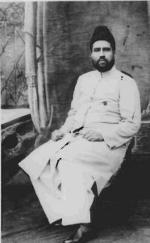
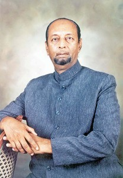
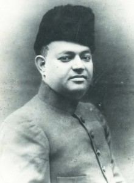

Nawab Bahadur Yar Jung
The All India Majlis Ittehad ul Muslimeen (AIMIM) is a political party dedicated
to protect and advance the rights of Muslims, Dalits, BCs, Minorities, and all other
underprivileged communities in India. It bears true faith and allegiance to the
Constitution of India. It strongly believes in the nation's secular democracy and
strives to protect and enhance its quality by effective representation from local
municipal councils to the parliament.
The party has its roots in the efforts of Hyderabadi Muslims, in the late 1920s,
who had come together to unite the community on a common platform. Their main objective
was to promote the socio-economic and educational development of Muslims. The organization
in its first year of inception was known as Majlis Ittehad Bain al Muslimeen and
later on as Majlis Ittehad ul Muslimeen.
In this phase, Nawab Bahadur Yar Jung was its tallest leader whose dedication, sincerity,
and skill made the organization reach new heights in a short period of time. He
served as its president until his untimely death, under mysterious circumstances,
in 1944. The organization thereafter went through an era of upheaval in the backdrop
of decolonisation, partition of the Indian sub-continent, and the subsequent police
action in Hyderabad of 1948. The Majlis was dissolved in 1949 due to the prevailing
political situation. There was a widespread sense of fear and despair among the
Muslims of Hyderabad who had just witnessed the massacres and lootings of the Police
Action. Their economic and social base was crushed through a policy of retrenchment,
forcible retirements, illegal occupation of mosques & awqaf propeties, introduction
of land ceilings, etc. The Muslim community at that time had no credible leadership
to call of their own and their representation in the legislatures was next to nil.
After almost a decade of inactivity, the Majlis was revived in 1958 by Maulwi Abdul
Wahed Owaisi, a notable lawyer and graduate of the famous Jamia Nizamia, who was
earlier jailed for ten months for his courageous political activities in defending
the rights of the people. The party was now called the All India Majlis Ittehad
ul Muslimeen (AIMIM). Undeterred by the prevailing atmosphere of fear & misery,
Abdul Wahid Owaisi took upon the onerous task of organising the community. His message
of hope soon caught the imagination of the masses who found a new leader in their
midst who was not afraid of taking on the might of the powers of the day. Thousands
of people began attending his meetings and he was invited to speak on other platforms
as well. He proved himself to be an articulate spokesperson of Indian Muslim demands.
He quoted articles 14 to 25 of the Constitution of India to stress that the rights
of the people could only be protected through political participation. He called
for a proportionate share of Muslims in government employment and the creation of
a fund of Rs.20 crores for their development.

Late Sultan Salahuddin Owaisi
The AIMIM began its electoral debut in 1959 when it contested and won two municipal
by-elections in the city of Hyderabad. The candidates won with huge margins of 50%
and 65%, respectively. The other leading contenders, backed by the Congress party,
nearly lost their deposits. In the 1960 municipal elections in Hyderabad, the AIMIM
contested 30 of 66 seats and won a spectacular 19. Since then there was no looking
back and the party grew from strength to strength. Maulwi Abdul Wahed Owaisi's main
contribution was integrating a disheartened Muslim community into India's democratic
framework and political processes. Through his tireless two decade long judicial
battle, he was able to restore the Darus Salam, the headquarter of the party, back
to the Majlis. He was adoringly conferred the title of 'Fakhr-e-Millat' by the community.
Maulwi Abdul Wahed Owaisi was a keen observer of democratic politics and foresaw
many of the future trends in India. The demands put forward by him during the party's
annual conventions demonstrate his futuristic outlook:
- 25% reservation of seats and scholarships in public institutions. (Majlis demand
since 1962)
- Riot investigations followed by payment of compensation through punitive tax on
the perpetrators. (Majlis demand since 1963)
- Inclusion of Muslims among the
backward class quota. (Majlis demand since 1975)
- Proportionate share in the
police and army recruitment. (Majlis demand since 1964)
In this phase, Nawab Bahadur Yar Jung was its tallest leader whose dedication, sincerity,
and skill made the organization reach new heights in a short period of time. He
served as its president until his untimely death, under mysterious circumstances,
in 1944. The organization thereafter went through an era of upheaval in the backdrop
of decolonisation, partition of the Indian sub-continent, and the subsequent police
action in Hyderabad of 1948. The Majlis was dissolved in 1949 due to the prevailing
political situation. There was a widespread sense of fear and despair among the
Muslims of Hyderabad who had just witnessed the massacres and lootings of the Police
Action. Their economic and social base was crushed through a policy of retrenchment,
forcible retirements, illegal occupation of mosques & awqaf propeties, introduction
of land ceilings, etc. The Muslim community at that time had no credible leadership
to call of their own and their representation in the legislatures was next to nil.
Through the party's consistent efforts a significant number of its demands have
come to realisation:
- In 1960 and 1973 addresses the Majlis president had demanded the appointment of
a national commission to report on the economic decline of Muslims.
The Gopal Singh Commission Report, the Sachar Committee Report, the Ranganath Misra
Report etc.
- In his 1966 address the Majlis President had asked the government to protect fundamental
rights of Muslims through the creation of Muslim Affairs Ministry.
Union Ministry of Minority Affairs was created in January 2006.
- In 1965 he had asked for the establishment of two Urdu universities.
Maulana Azad National Urdu University was established in 1998.
- Creation of fund for economic rehabilitation.
In 2008, the central government initiated the 'Multi-sectoral Development Programme'
under which the government has sanctioned Rs. 3,780 crore for improving socio-economic
parameters of the minorities.

Abdul Wahid Owaisi
Maulwi Abdul Wahed Owaisi was ably assisted in his work by his son Sultan Salahuddin
Owaisi, who succeeded him as the party president after his demise in 1975. He began
his political career at the young age of twenty-four and far exceeded the expectations
of anyone. Facing hostile powerful parties he never wavered in his goal of getting
Muslims their enshrined rights. His election to the Andhra Pradesh legislative assembly
in 1978 further increased the articulation of Muslim issues and interests. More
importantly the youth began to look at him as a role model and their belief in the
Indian democracy was solidified.
In the legislative assembly, he raised issues which have long been ignored by the
so-called mainstream parties including the socio-economic decline of the Muslims,
restoration of awqaf properties, lack of schools and other infrastructure in Muslim
dominated areas, illegal occupation of mosques, ex-servicemen's pension and housing
allotments, etc. His electoral success earned him the reputation as a 'giant killer'
who had defeated tough competition. Through deft political manoeuvring, he was able
to force the governments of the day in redressing several legitimate grievances
of the community. Sultan Salahuddin Owaisi raised the national prominence of AIMIM
by actively advocating the Muslim issues throughout the length and breadth of the
country. In the critical period of 80s and 90s he spearheaded and/or participated
in a number of national organizations and movements including:
- The Aligarh Action Committee
- The Babri Masjid Action Committee
- All Indian Muslim Personal Law Board
Through these national platforms, Sultan Salahuddin Owaisi effectively put forward
the Muslim demands. His 1984 victory from the Hyderabad parliamentary seat further
solidified his stature as a towering Muslim leader of the country.
He was an institution builder due to whose efforts the Deccan group of educational
institutions, the Darussalaam Cooperative Bank, and the numerous schools, hospitals,
etc. emerged throughout the city. The fact that thousands of Muslim youth have graduated
from these institutions is a living testimony to Sultan Salahuddin Owaisi's wisdom
and foresight. He was hailed as the 'Salar-e-Millat' by the masses. All this long
the AIMIM was consolidating itself in the municipal councils and the assembly by
increasing its tally.
Such success compared with his courage in forthrightly forwarding the Muslim demands
invited the wrath of the ruling powers. He held Narsimha Rao to be responsible for
the demolition of Babri Masjid and questioned his integrity. Narsimha Rao in turn
retaliated and was contemplating placing a ban on Majlis. Lal Krishna Advani in
an interview published by the French scholar Christophe Jaffrelot says that Rao
had confided to him about a possible ban on Majlis.